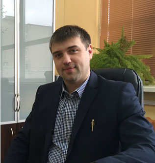

Лаборатория оптической спектроскопии полупроводников
Дата создания – 2018
Количество сотрудников - 5:
Кандидатов наук - 2
Основные направления НИОКР:Фундаментальные исследования
- Определение фундаментальных оптических параметров полупроводников и диэлектриков;
- Определение природы дефектов и структурного совершенства полупроводников методами оптической спектроскопии (монокристаллы, тонкие пленки), используемых для изготовления солнечных элементов и приборов оптоэлектроники.
Прикладные исследования
- Разработка и совершенствование оптических методов диагностики полупроводников и диэлектриков;
- Разработка физико-технологических основ создания солнечных элементов на основе многокомпонентных полупроводников со структурой халькопирита и кестерита.
Новые формирующиеся направления исследований
- Разработка физико-технологических основ создания светоизлучающих элементов для инфракрасной области спектра на наноструктурах Ge/Si с квантовыми точками (кольцами) Ge, в том числе, с наночастицами металлов (Au, Ag и др.), обеспечивающих экситон - плазмонное взаимодействие и повышение квантового выхода излучения.

Леончик Сергей Викентьевич
Руководитель лаборатории
кандидат физ.-мат. наук
+375 (17) 284-11-22
leonchik@physics.by